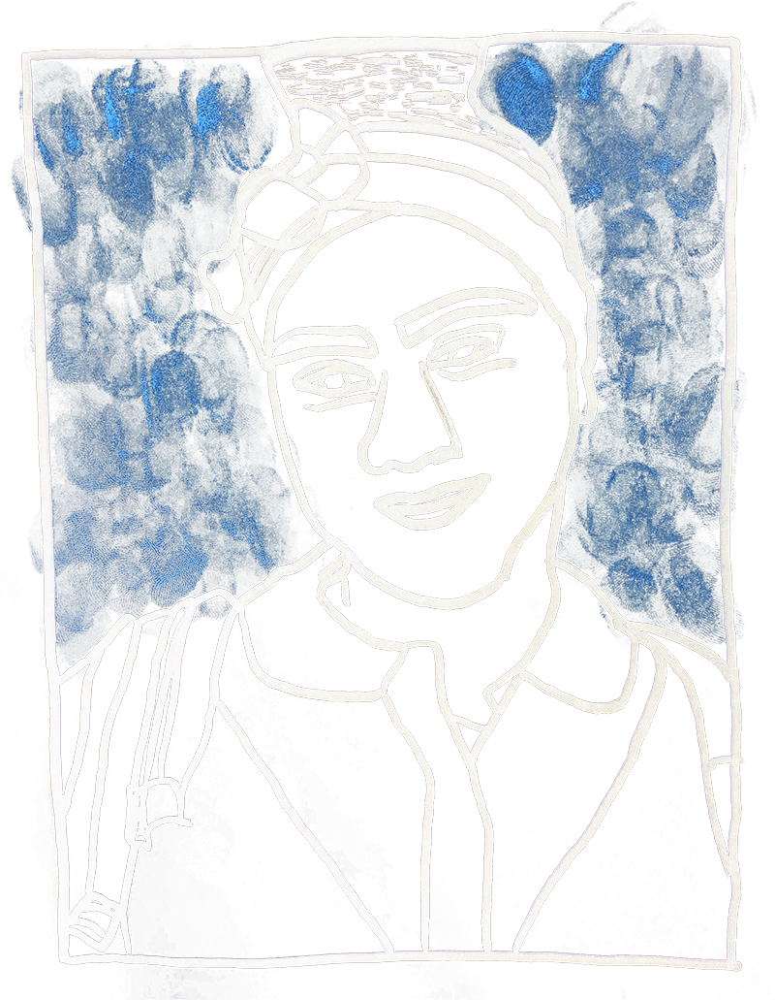

The Police
Interview with
Emmanuel Mauleon
Emmanuel Mauleon
Transcript
E: The police occupy this really special place in our government where you know if you go to your mayor and say, "okay look, the department of transportation is doing this one thing - they'll hold an oversight hearing and figure out what's going on which the department of transportation, how are they spending their money, how much are they charging for bus rides or whatever it might be." The police have a way more generalized mandate in most cities, so by law they're just told, "you have the duty to uphold the law and the rest is up to you." So they get to decide what happens when there's abuse or misconduct, and it's completely shut off from the public, not accountable to the public. In most cases, you have what we call "backend accountability," so it's like after something has already gone wrong, maybe you sue the police department or maybe you hope for criminal charge to happen or maybe you get a civilian review board that looks at misconduct. But in every other area of government, you have rules and regulations BEFORE things go bad to keep things from going bad, and that's the sort of oversight that we hope to see police roll out and to encourage because we believe the more transparency you have, the greater buy-in you have from the community, the greater legitimacy you have as a policing force.

Our elected officials
Interview with
Vanessa Gibson
Vanessa Gibson
Transcript
Andrew: What kind of oversight does the City Council have over what police can and can not do?
Vanessa: We have uh, a significant amount of oversight. I mean we don’t control the NYPD they are a city agency, so obviously the last leg of this leadership does come with the Mayor. So the City Council can propose and introduce legislation that will go through the process, but the Mayor ultimately has to sign it into law.
Vanessa: We have uh, a significant amount of oversight. I mean we don’t control the NYPD they are a city agency, so obviously the last leg of this leadership does come with the Mayor. So the City Council can propose and introduce legislation that will go through the process, but the Mayor ultimately has to sign it into law.

Who’s left out?
Interview with
Albert Fox Cahn
Albert Fox Cahn
Transcript
Albert: Every single voter is left out because our elected representatives haven’t been making the choice. They city council is left out, the mayor is left out but that’s because he choose to be and doesn’t want to take on the NYPD and do his job. Until we have rules that come from our city legislators in the City Council or state legislators in the Assembly and State Senate, I would say none of us have a voice in how this technology is being used and that’s wrong.